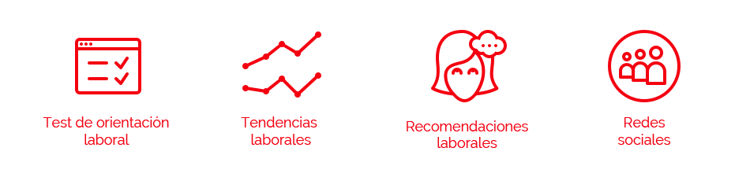

Preámbulo
Según un estudio realizado por el Reporte Global de Competitividad desarrollado por el Foro Económico Mundial, establece que Chile es la economía más competitiva de América Latina y el Caribe. Sin embargo, uno de los principales problemas para emprender económicamente en nuestro país es el inadecuado nivel de capacitación de la fuerza laboral.
Esta falta de conocimiento en nuestra fuerza laboral está directamente ligada a la falta de información existente al alcance de estas personas para poder abrir puertas y crear nuevas oportunidades de trabajo para ellos y ellas.
El desafío
"Diseñar una plataforma online interactiva que despliegue la información sistematizada del mercado laboral a nivel de sectores, ocupaciones y habilidades".
Sobre el desafío
El desafío cuenta de 3 partes, la primera está relacionada en trabajar en la definición y caracterización de los usuarios, la segunda parte tiene que ver con la información presentada en la plataforma, cómo ordenarla y hacerla llegar al usuario final de una manera ordenada, fácil y estéticamente atractiva para el usuario. Por último en la tercera parte se espera una orientación sobre qué herramientas de información se deben utilizar para poder llegar de manera eficiente al público objetivo, en esta etapa esperamos una justificación para cada una de las herramientas recomendadas.
Tareas realizadas
- 1.- Entrevistas al cliente y entes relacionados.
- 2.- Entrevistas a usuarios y expertos.
- 3.- Benchmark.
- 4.- User persona.
- 5.- Customer Journey Map.
- 6.- Insights y conclusiones.
- 7.- Brainstorming.
- 8.- Mapas de sitio y flujo.
- 9.- Sketches y wireframing de la propuesta.
- 10.- Guía de estilos.
- 11.- Mockups o prototipo de mediana fidelidad.
- 12.- Testeos y conclusiones.
Conociendo al cliente: Sus expecativas
Hemos tenido una serie de entrevistas con dos miembros del equipo de ChileValora, quienes son los interesados en el desarrollo de este proyecto. Ellos son Lucas Fernández y Carolina Salazar; quienes al mismo tiempo son los que nos han encomendado la misión del desarrollo de una nueva plataforma web de orientación y prospección laboral. Actualmente esta plataforma no existe en ningún otro país como tal y pretende extraer lo mejor de cada sitio para crear a futuro una página web integral.
A partir de lo anterior ellos nos plantean que su objetivo es hacer una propuesta enfocada en los usuarios, permitiéndoles acceder a las herramientas que les faciliten la búsqueda y obtención de información. Así mismo este sitio debe tener la capacidad de ir creciendo a medida que la información va aumentando y actualizándose.
Benchmark
Sitios utilizados para realizar el Benchmark.
En conjunto con las entrevistas se ha realizado un benchmark donde hemos podido extraer información sobre otros sitios que ofrecen información similar o que directamente están ligados con este tema.
Los aprendizajes que logramos obtener son los siguientes:
- 1.- La información desplegada va dirigida principalmente a personas que están buscando diversificar su rubro o simplemente orientación vocacional.
- 2.- Como la información es más para individuos que instituciones, el lenguaje que utilizan es preciso pero no complejo, también acompañado de mucha gráfica para reforzar la información.
- 3.- Los sitios mejor logrados son aquellos que presentan un diseño visual más limpio y con una paleta de colores más suave, ya que el enfoque del sitio debe estar en la información.
Acercándose a los usuarios: Variedad de realidades
Se realizaron varias entrevistas con distintos tipos de usuarios a través de diferentes medios (entrevistas presenciales, vía telefónica, entrevistas callejeras), para lograr captar la mayor cantidad de usuarios desde diferentes puntos de vista y situaciones, comprendiendo así sus necesidades y miedos.
Al mismo tiempo de realizadas las entrevistas con los usuarios, se lograron realizar cuatro entrevistas con expertos en distintas áreas que nos entregaron información sobre lo que solicitan ellos y el impacto que genera en distintos puntos la adquisición de la información para los usuarios.
Loreto Méndez, Eugenio Vergara, Pabla Ávila y Jorge Uribe. Expertos entrevistados.
A partir de toda la información recaudada nos dimos cuenta de la gran variedad de usuarios que en algún momento van a hacer uso de la página. Dentro de estos hemos podido identificar dos grandes grupos: Instituciones y personas naturales. Asimismo, dentro de estos grupos también existen subdivisiones de usuarios más específicas que vendrían siendo:
Instituciones
- 1.- Organismos de investigación.
- 2.- Institutos y universidades.
- 3.- Académicos.
- 4.- Gremios y sindicatos.
- 5.- Colegios técnicos.
- 6.- Organizaciones gubernamentales.
Personas
- 1.- Desempleados con profesión previa.
- 2.- Desempleados sin profesión previa.
- 3.- Migrantes con educación previa.
- 4.- Jóvenes estudiantes de institutos técnicos y liceos.
- 5.- Personas que tienen empleo pero se encuentran disconformes.
- 6.- Personas que tienen una profesión pero no la ejercen.
- 7.- Jóvenes y adultos sin estudios previos.
Posterior a la identificación de estos grupos se ha decidido escoger para este proyecto a los tres grupos más importantes con quién usaremos de guía para el desarrollo de la plataforma al ser los grupos mayoritarios. Estos son:
Síntesis de la información: User Personas y Customer Journey Maps
Para hacer más efectivo nuestro proceso de síntesis se ha decidido realizar User persona de los dos grupos de usuarios individuales principales. Puedes revisarlos con mayor detalle aquí.


También hemos realizado dos Customer Journey Maps de estos mismos usuarios en la búsqueda de información sobre reinvención laboral y orientación. Gracias a estos hemos podido identificar mejor los principales puntos de dolor de ellos. Puedes verlos con mayor detalle aquí.
Principales Insights extraídos a partir de la investigación
Luego de un largo proceso de plasmar y sintetizar la información recaudada se han generado varios entendimientos del cuales nos fuimos dando cuenta en el camino. Los insights que hemos podido recaudar son los siguientes:
- 1.- No es necesario que ciertas ocupaciones mueran, gracias a la tecnología pueden evolucionar en oficios más sofisticados.
- 2.- Es necesario ofrecer herramientas que de opciones a los usuarios de: capacitarse, especializarse, certificarse.
- 3.- Las empresas e instituciones solo necesitan información, no herramientas.
- 4.- Para las personas el despliegue de la info debe ser en un lenguaje sintetizado y personalizado.
Proceso de síntesis realizado
Etapa de ideación: Brainstorming
Posterior a la etapa de síntesis, se comenzaron a lanzar ideas a partir de los how might we creados anteriormente. Aquí hay algunas imágenes del proceso ejecutado.
Principales ideas a desarrollar: Decisiones clave
- 1.-Enfoque en el desarrollo del apartado de test de orientación laboral, ya que este tipo de flujo personalizado no existe en ningún otro sitio informativo con respecto a trabajo.
- 2.- Realizar un apartado de tendencias laborales donde la información general se fragmente a nivel de sectores geográficos y económicos, también a través de sueldos estimados.
- 3.- Recomendaciones laborales a través de los resultados del test de orientación laboral, donde se entregue información sobre la actualidad laboral en el rubro escogido y a su vez, empleos que estén relacionados y que tengan mejor campo y prospección, con vistas a futuro.
- 4.- Reforzar la utilización de redes sociales para transmitir información más informal y asociada a noticias y testimonios de usuarios del sitio web y de trabajos en el área que estén en alza.

Organizando información: Sitemap y Flowchart
Para poder crear la estructura de la arquitectura de información se ha realizado un Sitemap con la arquitectura de información ideal que debe tener el sitio a realizar.
Para ver el Sitemap del sitio haz click aquí.
Junto con esto se decidió realizar un flowchart de el principal flujo de uso de la página en el cual nos enfocamos: El test de prospecciòn laboral.
Flowchart del test de orientación laboral.
Proceso de prototipado Sketches y Wireframes
Posterior a la organización de la arquitectura de información referente al Sitemap ideal y a los Flowcharts realizados se comenzaron a hacer Sketches donde se puede dar un orden más visual a la arquitectura de información realizada.
Inmediatamente después de realizar los Sketches, estos fueron digitalizados con la información parcial que se quiere mostrar para realizar la primera tanda de testeos. Para ver un prototipo de baja fidelidad realizado haz click aquí.
Algunas pantallas realizadas para el wireframe
La propuesta de diseño
Guía de estilos
Paralelamente se realizó una guía de estilos referencial para aplicar posteriormente al diseño visual de la página. Se decidió utilizar como colores principales el naranjo que demuestra energía y entusiasmo junto con el azul celeste y sus tonalidades que se asocian a la sabiduría y a la confianza.
Decisiones de diseño: ¿En qué se enfoca la propuesta?
Test de orientación laboral
Para este primer prototipo hemos decidido con el equipo de trabajo enfocarnos en la propuesta más innovadora de nuestro proyecto: El test de orientación laboral.
Este test consiste básicamente en un par de preguntas, que junto a un pequeño ejercicio logra generar un logaritmo que permite identificar cuáles son las áreas que más se adecúan a los talentos y capacidades de los usuarios.
En las primeras preguntas, se realizan filtros sobre las preferencias laborales del usuario. Es decir, si desea reconvertirse laboralmente o incursionar en un área nueva; al mismo tiempo consulta sobre conocimientos previos y áreas de experticia para generar los primeros filtros de clasificación.
Posteriormente el usuario procede a contestar una pequeña trivia con selección de fichas en donde sus preferencias, junto con las preguntas anteriores, definirán sus resultados.

Algunas preguntas incluídas en el test.

Resultados del test.
Finalmente los resultados son expuestos a través de una clasificación de talentos detectados por medio de porcentajes, donde se muestran las áreas más afines con las preferencias y capacidades de los usuarios.
Estas áreas estan desglosadas en carreras que concuerden con los resultados del test, donde se le ofrece al usuario la posibilidad de obtener informacón sobre profesiones que se acomodan a sus gustos y al mismo tiempo estén en alza o con alta demanda en el campo laboral actual.
Testeos del prototipo: Validando la propuesta
Hemos podido realizar algunos testeos a personas en un café concurrido de Santiago donde extraímos feedback sobre el diseño visual y flujo del sitio.
Si deseas ver la pauta de testeo realizada a los usuarios haz click aquí.
Lugar donde se realizaron los testeos.
Dentro de las observaciones más destacadas hemos podido rescatar:
- 1.- Es necesario agrandar las fuentes en algunos textos y disminuir el tamaño de íconos que no entregan mayor información.
- 2.- El apartado de selección de profesiones no se comprende correctamente, es necesario aplicar alguna explicación o introducción para que se comprenda de inmediato.
- 3.- Hacer más explícitos los gráficos clickeables y crear la opción de destacar las áreas en las que se ha obtenido mayor puntaje.
- 4.- Reorganizar los gráficos de las áreas de interés para hacerlos más obvios, colocar la opción de explorar carreras nuevas en algún otro lugar (Banner Blindness).
- 5.- Agregar información escrita a los íconos en el apartado de habilidades requeridas, no son comprensibles a simple vista.
Conclusiones y futuras expectativas...
Finalmente, después de realizar la presentación del proyecto al equipo encargado en Chile Valora, se espera que el sitio sea lanzado en aproximadamente un año; de esa forma se pretende crear una base de datos y comenzar a ver el impacto que generará el sitio en el público general.
De todas formas es necesario considerar que es importante saber adaptarse a los tipos de usuario detectados e identificar los medios de difusión más adecuados para estos, así como el uso efectivo de redes sociales y la actualización constante de contenidos. De esta forma crearemos un sitio que sea realmente útil y que genere un impacto en la manera en que los chilenos deciden su futuro laboral.